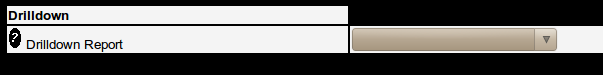
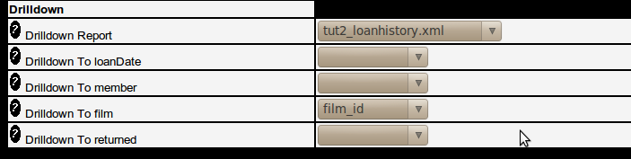

The Assignments Menu
Assignment Menu Overview
The Assignment Menu allows the setting up of additional calculations
that can be included in the report. Calculations are entered as straight
PHP code and can perform the following :-
Note that assignment code may not be
entered when running in SAFE mode as the user could create SQL
statements here that could delete and update data in the
database. For instructions on how to turn on and off Safe Mode see the Reportico Security section.
Reformat a column, such as left-padding a number with zeros,
truncating a string column, extracting the time from a datetime value,
converting to uppercase, embedding HTML tags to change the colour
etc.
Concatenate column values together into one
Use special functions that provide line number, the previous
value of a column, and whether a column has changed
Provide rolling sums for use in report trailers
Provide group sums for use in report trailers
Provide in line report images
Assignments involve selecting the report column (whether this is a
manually added column or not) , providing an expression to assign to
assign to that column and an optional test condition which if true for any
line of the report will perform the assignment.
Assignments are executed during report generation and are applied in
the order specified in this menu. Therefore assignments can be chained.
For example. a column may be a concatenation of two others but in the next
assignment that same column may be blanked out if a particular condition
is met.
Assignment Menu Attributes
Assign To Existing Column
The name of the column being assigned to. This must be an existing
column either present in the main report query or manually added using
the Add button in the Query Columns sub tab off the query Details
menu.
Assign To New Column
The name of a new column to assign to. Entering a value here will generate a new column in the report output which shows the results of the assignment. To change attributes of this column , such as width, justification etc, edit the column settings within the Query Details-?>Query Columns menu option.
Expression
The expression to assign to the column. This must follow PHP
syntax but to include a column value in the assignment then enter the
column name surrounded by {} (curly brackets). So to include the column
orderno in the assignment, use the
notation {orderno}. The following built
in functions
The following special built in functions exist :-
lineno("groupname")
Returns the current report line number. If groupname is passed
then returns the current line number within that group. The
groupname must relate to a group as set up in the Group sub tab
within the Output menu
old({columnname})
Returns the value for the column for the previous line in the
report. Useful for comparisons and specialised cumulative
calculations
sum({columnname},"groupname"}
Returns the rolling sum for a particular column within the
group if a groupname is specified.
min({columnname},"groupname")
Returns the rolling minimum value for a column and by group if
groupname is specified
max({columnname},"groupname")
Returns the rolling maximum value for a column and by group if
groupname is specified
avg({columnname},"groupname")
Returns the rolling average value for a column and by group if
groupname is specified
imagequery("SELECT image FROM table WHERE key =
".{image_id})
Fetches a database graphic held in table column image from
table WHERE column key = the value of report column image_id. The
above syntax will be fine if key is a numeric column, however you
will need to provide necessary quotes if not.
changed({columnname})
Returns true is the column value for the current report line
has changed since the previous line. Useful in condition
tests.
Examples:-
Assigns literal text to a stock status column, if stock level
too low
| Assign To |
Expression |
Condition |
| stockstatus |
'Out of Stock' |
{stocklevel} == 0 |
Pads an order number with zeros to a length or 4 digits using
standard PHP str_pad function
| Assign To |
Expression |
Condition |
| orderno |
str_pad({orderno},4,"0",STR_PAD_LEFT) |
Concatenates first and second names together
| Assign To |
Expression |
Explanation |
| fullname |
{first_name}." ".{last_name} |
|
| last_name |
{first_name}." ".{last_name} |
This is the same but will replace the last_name
column with first and last name concatenated. This may be
preferable to creating a manual column to hold it. Then
first_name can be hidden to ensure the report just shows
the full name. |
Report Line Number with trailing period "." using built in
lineno function.
| Assign To |
Expression |
Condition |
| count |
lineno()."." |
Rolling sum,minimum, maximum and averages
| Assign To |
Expression |
Condition |
| min_order_value |
min({order_value}) |
|
| max_order_value |
max({order_value}) |
|
| avg_order_value |
avg({order_value}) |
|
| total_order_value |
sum({order_value}) |
|
| last_order_value |
old({order_value}) |
Group sum, minimum etc. Second parameter passed is name of a
group that must have been set up on the Group entry
menu.
| Assign To |
Expression |
Condition |
| total_cust_order |
sum({order_value},"customer") |
|
| latest_order_by_customer |
max({order_date},"customer") |
|
| avg_country_temperature |
avg({temperature},"country") |
|
| latest_customer_order |
max({order_date},"customer") |
|
| earliest_customer_date |
min({order_date},"customer") |
|
Includes a database graphic from the database.
| Assign To |
Expression |
Explanation |
| flag_image |
imagequery("SELECT image FROM country where
country_code ='".{country_code}."'",50) |
Assumes that a country flag graphic is in the
country table as a BINARY/BLOB type in column image. The
imagequery function performs the select statement for the
relevant country_code value on each line and places the
resultant image against the flag_image column. Note
that the column attributes for flag_image must have
content Type set to graphic for the image to appear within
PDF reports. |
Condition
A condition that must be met in for the assignment to be made.
This takes the form of a PHP condition clause, and like the assign to
section allows the embedding of report column values. So for example,
you may wish to clear a column value if another column is set to a
particular value or even show a value in red if it exceeds or is less
than a particular value ( only works in HTML reports though ).
Examples
| Assign To |
Expression |
Condition |
| freegift |
'Free Gift!!!' |
{order_value} > 100 |
| Assign To |
Style Option: text colour |
Condition |
| stocklevel |
#ff0000 |
{stock_level} < 10 |
Image URL Wizard
Note only valid in HTML output.
Assigns an image to a report column.
Image URL
Enter a URL path to an image. This can be a fully pathed image beginning with http:// or a path to an image relative to the PHP script execution directory (in most cases relative to the reportico directory). You can include a column value into the image url by using the {} notation. Therefore if you have column called priority which had values red, green or amber then you could enter here images/{priority}.png which would get evaluated at run time.
Hyperlink Wizard
Allows a clickable link to be embedded in a report column.
HyperLink Label
This is what will be displayed in the report output. You can put a string, for example click, or you can enter a column value usign the "{}" notation which means that column value will be displayed but will be clickable.
Hyperlink URL
Enter a URL path to open when clicked. You may include column values within the link so that different URLs are called depending on the values in the report. So if you had a supplier name column and another with a supplier website you could set the label to {supplier_name} and a hyperlink URL of {supplier_website}.
Output Styles Wizard
Allows colours, borders, font settings to be set for different elements of report output. Styles can be applied to report body, report data, column headers, column rows, and each data cell. Note that some styes have no effect on certain report elements and any of the styles are not supported in PDF mode.
In PDF output, page and report body styles are not supported. Borders are only ever 1 pixel thick. In HTML mode most style settings do have an effect but there are some circumstances where unexpected effects may occur.
Several styles may be chosen in a single assisgnment, however only one output element my be assigned to in a single assignment. Assignments are additional, meaning that you can assign, for example a background color to a row in one assignment and then create another assignment setting the text color to rows and both styles will be applied. Styles can therefore be set across multiple assignments. If a condition is specified, then cell styles are only applied if the condition is met.
Apply Style To
Select whether to apply the style(s) to a specific cell (the one mentioned in the Assign/Assign to New Column), all individual cells in a row, the whole row, the page, the whole report body, group headers group trailers or column headers.
Text Colour
The text colour. Enter a stylesheet colour, this must be in the format #rrggbb. For example, #ff0000 is red.
Background Colour
The background colour. Used to colour fill the background of a whole row, a cell, the whole page etc. Using this it is possible to provide different colours on alternating rows. To do this create an assignment of type Row Style and chose one colour. Then add another assignment of type Row Style and choose another background colour but in the condition field put in
lineno() % 2 == 1
This is PHP code that divides the current data line by 2 and checks if the remainder is 1 meaning its true on every odd line number. The style will then be applied on every other line. You could use the same concept to give a different colour on each set of 3 consecutive lines.
Border Style
Indicates whether to draw a border around the selected element. In PDF mode, dotted and dashed lines appear as solid lines. The default "No Border" means no action is taken, but a value of "None" means do not display a border. So you could set a border around every cell using the "All Cells In Row" option and then use this option to turn off border for a single cell.
Background Thickness
Indicates the thickness of the border line. Can indicate to draw all sides of a border or individually select to draw just the top, left, right or bottom borders using the CSS notation of up to 4 space separated values ( you can use the px, cm, mm and em notations just as in CSS ). A value of 0 0 2px 0 does a 2 pixel underline
Border Colour
Use the HTML format of #rrggbb to indicate the colour of the border
Margin
Specify up to 4 values, in CSS format (see border thickness above), to indicate a margin to apply to the top, right, bottom and left respectively of the element applied to. Useful for setting margin of report body, offsetting the report data. Not supported in PDF format yet.
Padding
Specify up to 4 values, in CSS format (see border thickness above), to indicate a padding surround space to apply to the top, right, bottom and left respectively of the element applied to. Useful for setting adding space before a row (not that padding must be applied to "all cells" to create extra space above or below a line, not the row).
Aggregates Wizard
Reportico allows you to create rolling sums, averages, minimums, maximums, line numbers and access values from the previous line to assist in your assignments. This section is a quick way to generate your aggregate expressions. After adding an aggregate column you the value will appear in each line and change on each line as the value gets summed, averaged etc. You can hide the column in Query Details->Query Columns and show the aggregate only at the end using the group trailers. After selecting your aggregate values and pressing Ok, you will see the aggregate expression generated in the assignment's Expression text box.
Aggregate Type
The type of aggregate. One of Sum, Average, Minimum, Maximum, Previous and Count. Sum, average, minimum and maximum maintain in the assignment column a rolling aggregate of the column specified in the Aggregate Column value below. Previous populates the assignment column with the value of the specified Aggregate Column from the previous row of report output - useful for doing calculations on the difference in values between lines. The Count function gives the current report line number, or if a group is specified then it gives the number of lines printed within the specified group. Skip Line causes the current line to be omitted from the report line and no further assignments made for the line. Normally used with a condition, so for example lines with a blank value in a column could be ignored if a condition is used such as
!{columnvalue}
Aggregate Column
The report output column being aggregated.
Grouped By
The name of the column on which the aggregate should be reset to null. If your report contains groups then you will probably want to reset the aggregate on each change of the relevant group. Leave blank if aggregate is to be maintained through the whole report.
Database Graphic Wizard
Reportico allows you include graphics from your database into the report output. Normally graphics are stored in databases as BLOB types, say. Tables containing images usually have an integer key to refer to them. To show a graphic, you should select the key id as one of the column names in your main select. Then in this section you specify the column and table name where the image resides. This will allow the relevant SELECT to be built up when rendering the image to the browser. After entering the values and pressing Ok here you will see an expression generated which passes the relevant SELECT statement to image_query. Check that this looks ok before proceeding.
Column Containing Graphic
The name of the database column in your media/blob table which contains the image binary.
Table Containing Graphic
The name of the database table containing the image binary.
Column to Match Report Graphic
The name of the column in your media/blob table which contains the key value.
Report Graphic Width
The width to render the image as in the report in pixels. Must be specified.
Graphic Report Column
The source report column name which contains the image key value you want to look up in the databases blob/graphic table.
Drill Down
Reportico allows you do include an HTML link in you report output lines which can drill down to another Reportico report
passing through selected report line output as criteria. For example if you had report giving you a list of customers and another giving you
a list of invoices, then in each line of the customer report you can include an HTML link which runs the invoice report for the relevant customer.
This is achieved by creating an assignment to a new column. The column is assigned a string of an HTML link containing a url definition passing through as parameters the project, the report definition file you wish to run and the relevant report line values you want to use as criteria. This is in effect what you do when you run a report directly specifying criteria in the URL instead of in the criteria entry screen.
Drilldown is quite tricky and can involve a bit of fiddling to get it right as the assignment expression is often a complex PHP string definition. However the Assignments page provides a feature to get your assignment started.
At the bottom of the Assignments page you will see a section named 'Drilldown' as follows :-

Here you can choose the report to be run whenever you click the link. Choose the report and press Ok. Then scroll to the bottom of the assignments page again and you will see a drop down box for each criteria item that report accepts. For example :-

Then for each criteria item that you want to provide data for from the report (you wont probably populate all of these boxes) you need to specify the column from the source reports whose value should be passed to the target report. Leave blank any that are not relevant. The column you choose in each list box should have a value equivalent to the target criteria item's Summary Column. Note that there may be other criteria you want to pass to the report which are not provided in the target report line and must be passed manually. This is done by performing the steps further down. Note that if you are passing date values to date type crtieria items the format of your date value must conform to your database date format, probably YYYY-MM-DD if you are using MySQL. If it does not then you may need to create another report column which can be hidden which is formatted correctly.
Once you are happy you have chose click Ok and you should now see a PHP string expression in the Expression text box. This will evaluate in the report output to an HTML <a> tag containing your URL and which will appear in the report as the word 'Drill' which will be clickabel. You may now change this expression to add in extra criteria or change the word Drill to something else or even a link to a drill icon that you may have.
To add more criteria you need to know the name of the criteria item in the target report and you just include in the URL definition something like &MANUAL_{criteria_name}=value. If you want to specify a date or date ranges then that you can specify dates or use identifiers such as TODAY,TOMORROW,YESTERDAY,FIRSTOFMONTH,LASTOFMONTH,FIRSTOFLASTMONTH,LASTOFLASTMONTH. For a single date criteria you would need to include something like &MANUAL_{criteria_name}=TODAY or &MANUAL_{criteria_name}=2012-01-01. For a date range you would include something like &MANUAL_{criteria_name}_FROMDATE=FIRSTOFMONTH&MANUAL_{criteria_name}_TODATE=LASTOFMONTH. For more information on passing URL parameters or Date identifiers see Configuring Reportico - System Parameters
If you do modify your drilldown expression then you must be careful with the PHP syntax as its quite hard to make sense of the quotes and concatenation dot characters. You will soon see if you have a syntax error when you run the report.
Once you have a link appearing, then clicking on it will run the target report in a browser page. You should see the full URL used in the address bar. If you have any problems then you can check this for any clues.